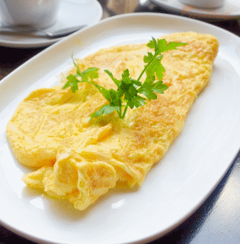

Какво да ям?
|  |
ОмлетВреме за приготвяне: 15 минути
|
Разбийте яйцата в някакъв съд. Добавете 20-25 грама настъргано сирене. При добре нагрято олио добавете сместа. Обърнете при зачервяване, ако някой иска може да не го обръща. От единия край сложете нарязаната шунка и настържете останалото сирене върху шунката. После внимателно покрийте плънката с другата половина на омлета, за да заприлича на полукръг.